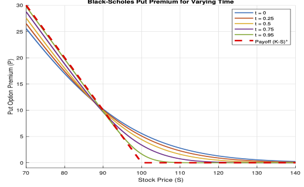
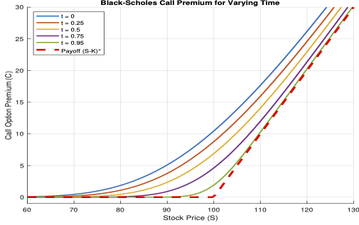

Continuous Time Models
In discrete-time option pricing models, we first partition the time horizon \([0,T]\) into \(n\) sub-periods with partition \(\mathbb{T}_n = \{0=t_0, t_1, \ldots, t_{n-1},t_n=T\}\) where \(t_k = k \Delta t\), and \(\Delta t = T/n\). We then constructed a model to determine the option price at time \(t=0\). The price obviously depends on \(n\) (see, for instance, Theorem «Click Here» ). A fundamental question is: `how well does the pricing model behave as we increase \(n\), and what is the limiting behavior as \(n\rightarrow \infty\)?' In this limiting case, where \(n\rightarrow \infty\) (equivalently \(\Delta t\rightarrow 0\)), we aim to obtain a model that describes the evolution of option price continuously over time for all \(t\in [0,T]\).
In this chapter, we develop a continuous-time model considering the limit of the multi-step binomial model as the step size \(n\rightarrow \infty\). By appropriately scaling the binomial price movements, we show that the discrete pricing model converges to a continuous time stochastic process, namely, the geometric Brownian motion (GBM). This leads to the celebrated Black-Scholes or Black-Scholes-Merton model.
Furthermore, using a self-financing hedging argument along with the GBM model for the underlying asset, we derive the risk-neutral option pricing framework. By applying Itô lemma, we obtain a second order parabolic partial differential equation for the option price, known as the Black-Scholes equation (or Black-Scholes-Merton equation) whose solution can be obtained explicitly resulting in the Black-Scholes formula for option price.
Stock Price Models
In this section, we start with the logarithmic binomial model derived in Section «Click Here» and show that in the limiting case, it tends to a continuous time model, which is called the lognormal model that follows a geometric Brownian motion.
Lognormal Model
For simplicity, consider the case \(T=1\). Using (5.28) and (5.29), we get
Recall from (5.27), we have \(\ln(S_n/S_0) = \sum_{k=1}^n R_k\). Since the random variables \(R_k\) are iid with mean \(\tilde{\mu}\) and variance \(\tilde{\sigma}^2\), by the central limit theorem we have
where \(\Phi\) is the distribution function of the standard normal random variable. Thus, for a sufficiently large \(n\), the random variable \( (\ln\left(\frac{S_n}{S_0}\right) - \mu)/\sigma \) is approximately standard normally distributed. Consequently, we see that \( \ln\left(\frac{S_n}{S_0}\right) \) is approximately normally distributed with mean \(\mu\) and variance \(\sigma^2\)
Thus, for sufficiently large \(n\), the total return \(S_n/S_0\) is approximately lognormally distributed. The rate of return \((S_n - S_0)/S_0\) is therefore approximately distributed as a shifted lognormal random variable.
More generally, for any \(T>0\), we can see that \( \ln\left(\frac{S_T}{S_0}\right) \) is approximately normally distributed with mean \(T\mu\) and variance \(T\sigma^2\) for sufficiently large \(n\), where \(T = t_n\).
Brownian Motion
Define
where \(\mu\) and \(\sigma\) are the parameters as defined in the above discussion.
The preceding discrete-time analysis suggests that, in the limit as the time step tends to zero, the process \(\{W_t\}\) should have approximately normally distributed increments with mean zero and variance proportional to time. This motivates modelling \(\{W_t\}\) as a standard Brownian motion that is, a stochastic process with independent increments such that \(W_t - W_s \sim \mathcal{N}(0,t-s)\) for \(0 \le s < t\).
satisfies
where
The stock price process \(\{S_t\}\) is called the geometric Brownian motion (GBM).
- Determine the probability that the stock price increases by at least 25% by one year.
- Determine the probability that the stock price decreases by at least 15% by one year.
Answer: (1) {0.2061}, (2) {0.0401}
- Find the expectation of the stock price for 6 months.
- Find the standard deviation of the stock price for 6 months.
- If the current spot price of one share of the stock is ₹ 100 and the prevailing interest rate \(r=\mu + \frac{\sigma^2}{2}\), then find per-unit price at \(t=0\) of the corresponding future contract with one month expiration.
Option Pricing Model
In previous sections, we have derived a continuous time model for the underlying asset. We now study the continuous time model for option premium.
Recall, in Theorem «Click Here» , we have obtained a formula for option premium using an \(n\)-step binomial model. Let us assign to each \(n\), the corresponding price as \(H^{(n)}_0\). Then we have a sequence of option prices \(\{H^{(n)}_0\}\), where the \(n^{\rm th}\) term of the sequence corresponds to the price of the option at time \(t=0\) computed using the partition \(\mathbb{T}_n\) of \([0,T]\) with \(\Delta t_n = T/n\), for \(n=1,2,\ldots\). With this notation, we pose the following question: `does the price sequence converge as \(n\rightarrow \infty\)?'. This question is equivalent to asking, `does the discrete-time pricing model admit a well-defined continuous-time limit?'. It can be shown that the binomial model is stable, i.e. the price sequence converges as \(n\rightarrow \infty\), and in the limiting case, we obtain the well-known Black-Scholes model.
For a given number of partitions \(n=1,2,\ldots\), let us denote the up and down movements of the stock as \(u_n\), and \(d_n\), respectively. For the sake of simplicity, we consider the following parameter calibration:
Assume that the risk-free instrument is a continuous compounding scheme with interest rate \(r\).
Let us assume that the market is viable and complete. Then, by Theorem «Click Here» , there exists a unique EMM, \(\mathbb{P}^{*}_n(\{u_n\}) = p_{n}^*\), which, in the binomial context, is the risk-neutral probability
From the following lemma, we observe that although \(p_n^*\) depends on \(\mu\) for finite \(n\), its limit as \(n \to \infty\) is independent of \(\mu\).
Therefore, we have
Using Taylor expansion for each exponential, we get
We can see that the RHS tends to zero as \(n\rightarrow \infty\). Hence the result.
Black-Scholes Formula
We consider a European option with strike \(K\) and period \([0,T]\). From Theorem «Click Here» we can see that for a given \(n=1,2,\ldots\), the price of the option is given by
where \(H_{T}^{(n)}\) is the payoff of the option.
Let us first consider a European put option, where the payoff is given by
where \(S_{T}^{(n)} = S_0e^{X_n},\) with \(X_n\) being the random variable on the sample space \((\Omega,\mathcal{F}^*)\) defined by
for each \(\boldsymbol{\omega}=(\omega_1,\omega_2,\ldots,\omega_n)\in \Omega\), and
With the above notation, the initial option price can be written as
We assume that the stock movement during the time period \((t_k,t_{k+1}]\) is independent of its movement in \((t_{k-1},t_k]\). With this assumption, we can see that \(Y_k\)'s are iid random variables and we have (for each \(k=1,2,\ldots,n\))
We now state two important properties of \(X_n\).
From (7.9) we see that, for each \(k=1,2,\ldots,n,\)
Using Lemma «Click Here» and (7.6), we get
This can be written as
Observe that the right hand side is independent of \(k\) and therefore, we have
Since \(\Delta t_n = T/n\), we get
which proves the desired result.
Let us now prove second result. Since \(Y^{(n)}_k\)'s are iid, we have
But, we have
Substituting this, we get
This completes the proof of the second result.
Since \(X_n = \sum_{k=1}^n Y_k^{(n)}\) is a sum of iid random variables whose mean and variance scale appropriately with \(n\), a central limit theorem applies and we have the following property whose proof is omitted.
The above two lemmas can be combined to get the following theorem defining the Black-Scholes price formula for a European put option.
Let \(H_{0}^{(n)}\) be the price of a European \(K\)-strike put option (denoted by \(P_{0}^{(n)}\)) with period \([0,T]\) partitioned into \(n\) sub-periods. Let the parameters \(u_n\) and \(d_n\) be given by (7.4). Then the limit
exists and is given by
where \(\mathbb{E}^*\) denotes expectation with respect to the probability measure (called risk-neutral probability measure) obtained as the limit the limit of the risk-neutral probabilities in the binomial model, and
The proof of the above theorem is advanced and we omit it for our course. However, we make the following remark about the proof of the theorem.
Recall that the convergence in distribution of random variables is defined only in terms of convergence of the respective distributions. Consequently, it is not necessary that the random variables are defined on the same probability space. If we denote by \((\Omega_n, \mathcal{F}_n,\mathbb{P}_n)\) the probability space on which \(X_n\) is defined and \((\Omega, \mathcal{F},\mathbb{P})\) the probability space on which \(X\) is defined, then \(\{X_n\}\) converges in distribution to \(X\) if and only if
for all \(\phi\in C_b(\mathbb{R}^m)\) (set of all bounded continuous functions), where \(E_n\) and \(E\) are the expectations taken with respect to the probability \(\mathbb{P}_n\) and \(\mathbb{P}\), respectively.
We used the above property to conclude the convergence of the sequence \(\{P_{0}^{(n)}\}\) given by (7.8) to \(P_0\). Note that to use the above property, we need \(P_{T}^{(n)}\) given by (7.6) to be a bounded continuous function and this is the reason why we restricted to put options. We can extend the pricing formula to call options using put-call parity relation.
The value \(P_0\) defined by (7.15) is called the Black-Scholes price of a European put option with strike \(K\) and maturity \(T\).
Note that (7.15) does not give an explicit formula for the price. However, it is possible to derive an explicit formula for \(P_0\), which is one of the advantages of the Black-Scholes' model.
The Black-Scholes price \(P_0\) can be written as
where \(\Phi\) is the standard normal distribution function
and
\(r\) is the prevailing interest rate.
Since \(X\sim \mathcal{N}\left(\left(r-\frac{\sigma^2}{2}\right)T,\sigma^2T\right),\) we see that
where \(Z\sim \mathcal{N}(0,1)\) is the standard normal variable. Therefore,
We have
Let us compute the two quantities on the right hand side.
For the first term, we have
The second term can be simplified to
Since \(d_+ = d_-+\sigma\sqrt{T},\) we obtained the required formula.
The Black-Scholes put price for varying time is depicted in the following figure.

We can now obtain the price for a European call option.
The Black-Scholes price \(C_0\) for a European call option can be written as
where \(\Phi\) is the standard normal distribution function and \(d_{\pm}\) are given by (7.16).
Proof is left as an exercise.
The Black-Scholes put price for varying time is depicted in the following figure.

Black-Scholes Differential Equation
In this subsection, we derive a partial differential equation (PDE) known as the Black-Scholes equation, whose solution is the Black-Scholes formula obtained in the previous section. There are at least two approaches to derive this PDE: one is an asymptotic approach based on the binomial model, and the other uses delta hedging. We omit the first and present the derivation of the Black-Scholes equation through delta hedging.
Let us first define the continuous-time analogue of the self-financing strategy. A strategy is a measurable process \(\{\Pi_t\}\), where \(\Pi_t=(\phi_t, \boldsymbol{\theta}_t,\boldsymbol{h}_t)\), and the associated value process is defined as
As before, \(\boldsymbol{\theta}\) denotes the vector of units held in the risky assets and \(\boldsymbol{h}\) denotes the vector of units held in the options. We assume that the market allows short selling and trading in fractional units. Consequently, the components of the portfolio can take any real values.
A strategy \(\{\Pi_t\}\) is said to be self-financing if
Let \(\Pi=\{(\phi_t, \theta_t)\}_{0 \le t \le T}\) be a self-financing trading strategy, where \(\phi_t\) and \(\theta_t\) denote the number of units invested in the stock and the risk-free asset, respectively.
Let \(H = H(S_T)\) be the payoff of a European contingent claim at maturity \(T\). Suppose that the claim can be replicated by the strategy \(\Pi\), so that the terminal value of the portfolio satisfies
We assume that \(V_t = V(t,S_t)\) for some sufficiently smooth function \(V(t,s)\).
The value of the portfolio at time \(t\) is given by
and since the strategy \(\Pi\) is self-financing, we have
Assuming that the price process \(\{(B_t, S_t)\}\) is Itô, we get
In a viable market, the replicating condition implies \(V_t = H_t\), for all \(0\le t\le T\), where \(H_t=H_t(S_t, t)\) is the premium of the European contingent claim at time \(t\). Then, we have
By Itô lemma, we have
By comparing the above two equations, we get
and
Since \(V_t = H_t\), we get
Using the expression of \(\theta_t\), we get the expression for \(\phi_t\) as
Substituting the expressions of \(\phi_t\) and \(\theta_t\) in the above equation, we get the well-known Black-Scholes equation
In the above equation we consider \(H\) as the dependent variable and the \(t\) and \(S\) as independent variable. Thus, the premium of a European option (for non-dividend paying stock S) using delta-hedge (replicating portfolio) can be obtained as the solution \(H=H(t,S)\) of the terminal value problem
where the second condition is called the terminal condition with \(H_T\) being the payoff of the European option.
where \(\tau = T-t\) and \(x=\log S\), and going through the classical calculus rules, we obtain the initial value problem (also known as the Cauchy problem)
equivalent to the above terminal value problem.
Continuous-Time Martingale Pricing
In the discrete-time binomial model, we have shown that the absence of arbitrage is equivalent to the existence of a unique risk-neutral probability measure under which the discounted (underlying) asset prices are martingales. In this section, we extend this principle to continuous time and connect it to the Black-Scholes model.
We first define martingale process in continuous time framework.
A stochastic process \(\{M_t\}\) adapted to a filtration \(\{\mathcal{F}_t\}\) is called a martingale if
We can see that a martingale is a ``fair game'' in the sense that, given current information, the best prediction of the future value is the present value.
If a filtration is generated by a Brownian motion, then it is called a Brownian filtration.
If a stochastic process with continuous paths is a martingale with respect to a Brownian filtration, then it is called the Brownian martingale.
An important example of a Brownian martingale process involves Itô integral, which we will define now.
Let \(\{W_t\}_{t \ge 0}\) be a Brownian motion adapted to a filtration \(\{\mathcal{F}_t\}\).
A process \(\{b_t\}\) is called a simple adapted process if it is of the form
where \(0 = t_0 < t_1 < \cdots < t_n = T\), and each \(b_i\) is \(\mathcal{F}_{t_i}\)-measurable.
The Itô integral of \(b\) with respect to \(W\) is defined by
Let \(\{b_t\}\) be an adapted process such that
Let \(\{b_t^{(n)}\}\) be a sequence of simple adapted processes such that
Then the Itô integral of \(b\) with respect to \(W\) is defined as the \(L^2(\Omega)\)-limit
where the limit is taken in mean-square sense, i.e., the sequence \( \int_0^T b_s^{(n)} \, dW_s \) converges in \(L^2(\Omega)\).
Martingale Representation Theorem
In this section, we work throughout with Brownian filtrations. In this setting, we restrict attention to square-integrable martingales adapted to this filtration.
A fundamental result in this framework is the martingale representation theorem, which characterizes martingales as stochastic integrals with respect to Brownian motion. We use this theorem to examine the martingale property of the discounted stock price process \(\tilde{S}_t\).
We begin by stating a fundamental property of stochastic integrals with respect to Brownian motion, which can be used in conjunction with the martingale representation theorem. The proof of this lemma is omitted.
Then the process
is a Brownian martingale.
We may equivalently write the process \(\{M_t\}\) in the Itô differential form as
Thus, any process whose Itô differential is of the above form (i.e., with no drift term) is a martingale, provided \(\{b_t\}\) satisfies the integrability condition in the lemma.
In fact, the converse is also true and it is an important theorem for finance, whose proof is omitted for this course.
The converse is also true in the Brownian setting. That is, every square-integrable martingale admits a representation as a stochastic integral with respect to Brownian motion. This result is stated in the following theorem and its proof is omitted for this course.
Let \(\{M_t\}\) be a square integrable Brownian martingale with respect to the Brownian motion \(\{W^{\mathbb{P}}_t\}.\) Then, there exists a unique (upto \(\mathbb{P}\)-equivalent) square-integrable process \(\{b_t\}\) adapted to the Brownian filtration such that
Let \(\{S_t\}\) denote the stock price satisfying the stochastic differential equation
where \(\{W_t^{\mathbb{P}}\}\) is a Brownian motion under the physical measure \(\mathbb{P}\).
For a prevailing interest rate \(r\), define the discounted stock price
Using Itô formula, we obtain
The above result shows that, the discounted price process is not, in general, a martingale under the real-world probability \(\mathbb{P}\). Recall, in the discrete time framework, the discounted price process becomes a martingale under the risk-neutral probability measure. This suggests that, in the continuous time setting, we must look for a suitable change of probability measure under which the discounted stock price process becomes a (Brownian) martingale.
Girsanov's Theorem
From the previous subsection, we understood the need for a change of probability measure in order to make the discounted stock price process a martingale. In the discrete-time setting, the delta-hedging within the binomial model led to the suitable risk-neutral probability. The natural question is whether an equivalent probability measure with a similar property exists in the continuous-time framework. This question is answered affirmatively by Girsanov's theorem. We state the result in a form suitable for our purposes and omit the proof.
Let \(\{W_t^{\mathbb{P}}\}\) be a Brownian motion on a probability space \((\Omega, \mathcal{F}, \mathbb{P})\) with respect to the natural filtration \(\{\mathcal{F}_t\}.\)
Let \(\{\theta_t\}\) be an adapted process satisfying
Define the process \(\{Z_t\}\) by
Then \(\{Z_t\}\) is a martingale under \(\mathbb{P}\). Define a new probability measure \(\mathbb{Q}\) on \(\mathcal{F}_T\) by
Then the process \(\{W_t^{\mathbb{Q}}\}\) defined by
is a Brownian motion on \((\Omega, \mathcal{F}, \mathbb{Q})\) with respect to the same filtration \(\{\mathcal{F}_t\}\).
By taking \(\theta_t = \lambda\), a constant, Girsanov's theorem can be used to see that there exists a probability measure \(\mathbb{Q}\) such that the process
is a Brownian motion under \(\mathbb{Q}\), where
This choice of \(\lambda\) is made so that the drift of the stock price becomes equal to the risk-free rate under the new measure.
Under the new measure \(\mathbb{Q}\) defined above, show that the stock price process satisfies the stochastic differential equation
Consequently, the discounted stock price satisfies
and hence \(\{\tilde{S}_t\}\) is a martingale under \(\mathbb{Q}\). We refer to the measure \(\mathbb{Q}\) as the risk-neutral measure.
Feynman-Kač formula
Let \(H(S_T)\) denote the payoff of a European derivative at time \(T\). Under the risk-neutral measure \(\mathbb{Q}\), we define the price process by
where \(\{\mathcal{F}_{t}^\mathbb{Q}\}\) is the filtration generated by the Brownian motion \(\{W_t^{\mathbb{Q}}\}\).
We state the theorem and omit the proof for this course.
Let \((W_t^{\mathbb{Q}})_{t \ge 0}\) be a Brownian motion under the risk-neutral measure \(\mathbb{Q}\), and let the stock price process \((S_t)_{t \ge 0}\) satisfy
Let \(H_T : (0,\infty) \to \mathbb{R}\) be a continuous payoff function satisfying a polynomial growth condition, i.e.,
Define \(V_t = V(t,S)\) given above. Then the following holds:
- Existence: The function \(V(t,s)\) is a classical solution \(V \in C^{1,2}([0,T)\times (0,\infty))\) of the Black-Scholes PDE:
\begin{eqnarray} \frac{\partial V}{\partial t} + \frac{1}{2}\sigma^2 s^2 \frac{\partial^2 V}{\partial s^2} + r s \frac{\partial V}{\partial s} - r V = 0, \quad 0 \le t < T, \end{eqnarray}(7.26)
with terminal condition
\begin{eqnarray} V(T,s) = H_T(s). \end{eqnarray}(7.27) - Uniqueness: The function \(V(t,s)\) is the unique solution in the class of functions with at most polynomial growth in \(s\).